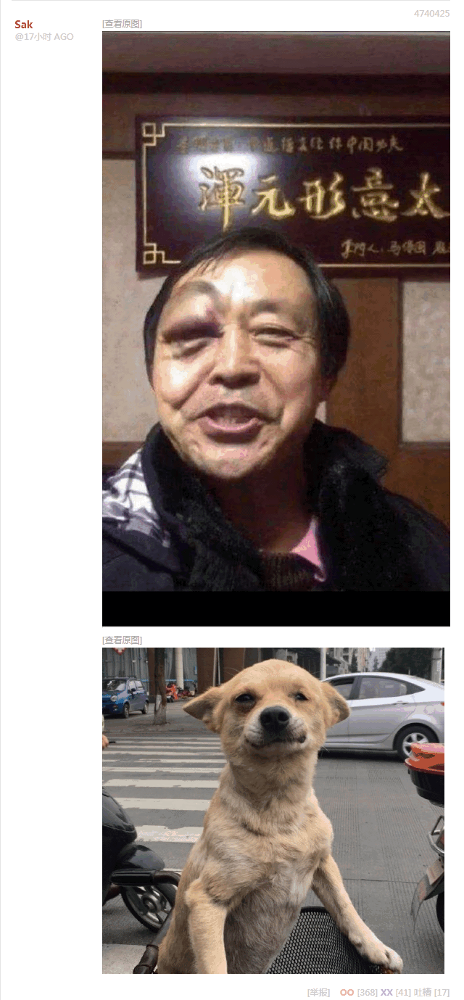
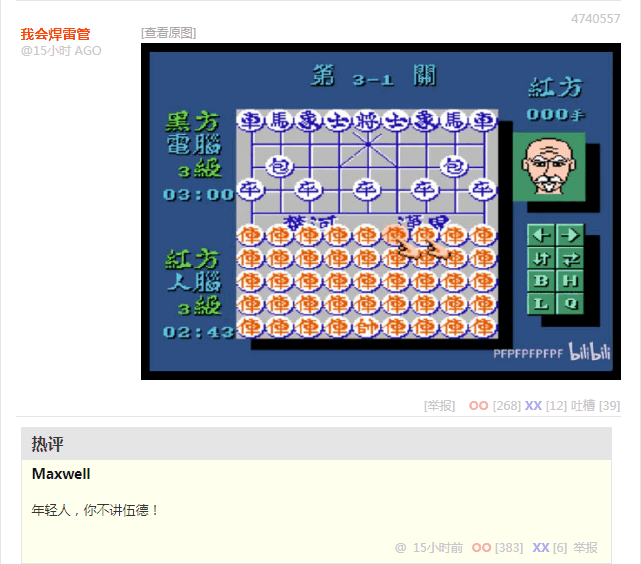
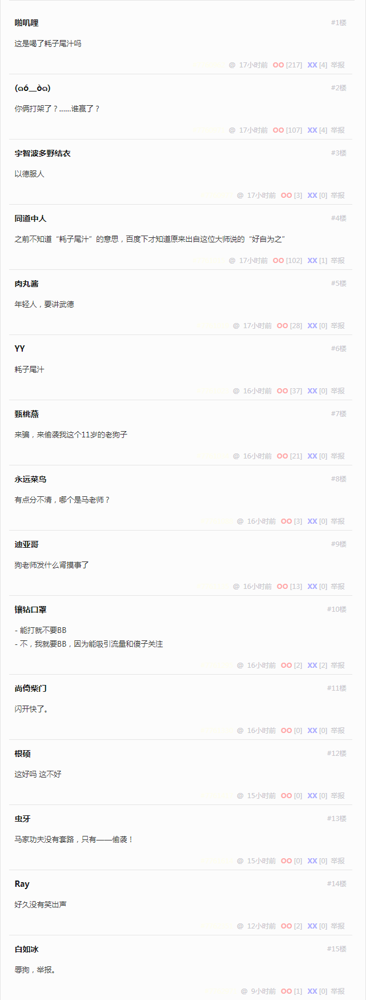
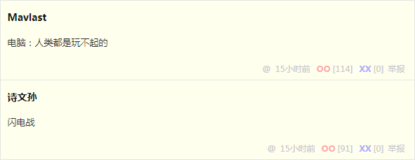

洗完澡了精神抖擞容光焕发，上网乱转没发现什么重要情报。刚才在《异闻录》正文〔006〕加了一条脚注，反应应景局势顺便替幕后黑手炫耀「大预言术」，其素材在《设定集》这边也能用到：
简单说，在第十一篇设定当中已经出现了伏笔，「奥赛梯的朱加什维利，格鲁吉亚、亚美尼亚、阿塞拜疆的王」，是《以西结书》第38-39章的剧本，而「歌革与玛各」是《启示录》剧本。在《教宗预言》已经翻到了最后一页的时候，幕后黑手「大预言术」该实现了。
也就是说，这次美帝灯塔国换届，伊朗又该抖起来了，然后就在一统外高加索的罗刹撑腰下，继续打以色列。而已经跟以色列关系正常化的大票海湾王爷国，就是剧本当中的「战果」。钦定反派只管烧杀掳掠抢钱抢粮抢娘儿们，只要在导演指挥下被以色列打得屁滚尿流，衬托杀伐果断通权达变狠角色「必显为大，显为圣，在多国人的眼前显现」就行了，带着大批战利品圆润的回到故乡，丢了面子得了里子。
自打美帝灯塔国大选投票之后，《异闻录》那边就不再继续更新了，是因为前面提到过主线剧情已经「有始有终」了，接下来就需要在骨骼上填充血肉内脏，最后再包上一层画皮。而今天在「卧底与灭口」章节中更新的脚注，更是影射外高加索局势。
就看这几天国际一流和谐宜居之都「高学历精英社交圈」之上充沛的钦定文豪野生国师意见领袖指路明灯纷纷扮演事后诸葛亮追涨杀跌嘲讽亚美尼亚，还有高赞回答提到了总统总理会被从肉体上消灭。
再联想2008年格鲁吉亚萨卡什维利前倨后恭的精湛表演，不外乎先打第一枪然后兵败如山倒作抱头鼠窜状，是不是剧情很类似啊？当时繁荣的简体中文互联网上漠北大手情报机构指使的岭南精盎情报掮客一阵狂欢，来自「匿名索虏」的嘲讽素材极大充沛，各位读者还有印象否？
自打政治娱乐化以来，「历史舞台」这种措辞就不再是比喻，名角大腕出道就签了卖身契，一切行动听指挥。演员嘛，就是干这事的，丢人现眼出洋相但是幕后黑手指天发誓拍胸脯保证能饶过汝一条狗命①，总比杨子荣那种死间兼抹布兼夜壶帅不过三周的下场要好点吧？不想当提线木偶行尸走肉，那就甭签卖身契嘛，立场坚定不动摇，甭管市面上群众演员如何挤兑「在这××城你出不了头」都不要中了激将法。
早说过了，工作上趁我病要我命的时候生活中看见家贼笑得那么奸诈就知道肯定没好事，实践「谋定而后动」的职业习惯就得跳出三界外不在五行中，缩卵怂货窝囊废是必然选择。置身事外才能「没有怨恨与偏见」或曰站着说话不腰疼，读者抱怨更新太慢则是「无一字无来历」的职业习惯。虽然说《异闻录》那边提到过动机是「示范」如何瞎编乱造，但是看见市面上码字巨侠纷纷向钦定文豪看齐放飞自我胡说八道并美其名曰「榜样的力量是无穷的」，咱还真拉不下这张脸。
之前反复强调根本不是什么「文人相轻」而是深入揭批扮演扫帚星乌鸦嘴的「vtuber皮」所体现的幕后黑手的阴谋诡计，总有娱乐至死の色目逗哔「我们年轻人在网上闹着玩呢」插科打诨嬉皮笑脸糊弄过去；再三提醒「政治娱乐化」的现状当中不能把「作者最大剧本钦定导演叫人三更死谁敢留人到五更」仅仅视为文艺理论理解，总会被以「政治敏感」理由「亦当删去」。到现在了，全球遭瘟情况下三洲通衢打得稀里哗啦，那么多莫名其妙的冤死鬼，还口称「兲朝经济稳中向好，国际局势和平得一哔」动辄叫嚣「搬板凳嗑瓜子喝汽水」看热闹么？
总之，现在就根据「太阳底下没有新鲜事」「一切历史都是当代史」原则提前剧透了，是否局势会按照幕后黑手的如意算盘发展，甭问我，去问「没什么自由意志，中央情报局已经钦定了」的大结局到底是啥吧。
刚爬起来酒劲还在头昏脑胀，上网乱转没发现什么重要情报，于是从九省通衢の煎蛋弄了点素材，先补充本篇脚注，再提交《小人物改变历史走向》分类归档。
简单说，砥砺奋进八年来多少情报掮客得意洋洋肆无忌惮的炫耀大手情报机构无孔不入，把哪儿渗透得如同筛子一般，只要国际长途电话打到火线上，间谍特务卧底应声而起，雷厉风行的从事中央交代的神转折骚操作革命任务，从而实现把屠夫的凶残化为一笑之类娱乐至死的钦定大目标。
不惮以最大的恶意揣测，以「实习律师」指代的各种「军机处学习行走」之类关键岗位，会在新刮中央贫民部领导下，以星星之火可以燎原的气势，在这宽广美丽的土地上，炮制出充沛的民事纠纷；色目混混鸡鸣狗盗之徒则在新刮中央疲民部领导下对当事人进行多方围堵两面夹攻钦定其死路一条；色目法学博士在新刮中央愚民部领导下，按照《塔木德》最高指示精神以工作量最低原则不予受理或曰懒政并美其名曰「民不举官不究」；色目情报掮客则在新刮中央辱民部领导下，于各大宣传阵地当中颠倒黑白混淆是非倒打一耙贼喊捉贼……是为「革命只有分工不同，没有高低贵贱之分」者也。
洗完澡了精神抖擞容光焕发，上网乱转还是没发现什么色目含量甚高的重要情报。那么把与本篇注释相关的情报工作之盲点简单罗列如下：
- 美帝灯塔国共和党国师基辛格最近情况如何
- 美帝灯塔国民主党前任国师布热津斯基蒙主宠召之后新任国师人选是否已经表决通过
- 美帝灯塔国执政精神领袖雷欧·施特劳斯仙逝之后哪位得意门生出任掌门兼指路明灯
- 美帝灯塔国在野精神领袖埃里克·沃格林仙逝之后哪位得意门生出任掌门兼意见领袖
- 我中华兲朝上国三朝元老大贤良师正一道嫡传弟子王沪宁真君是否已经成为执政精神领袖
- 我中华兲朝上国在野精神领袖到底是哪拨贼秃的嫡传弟子
这就是「充沛的政治和意识形态内容与激烈的政治和意识形态斗争新动向」，并且色目含量不知高到哪里去了，无一字无来历。
未完待续
- ① 素材「年轻人不讲武德」
   